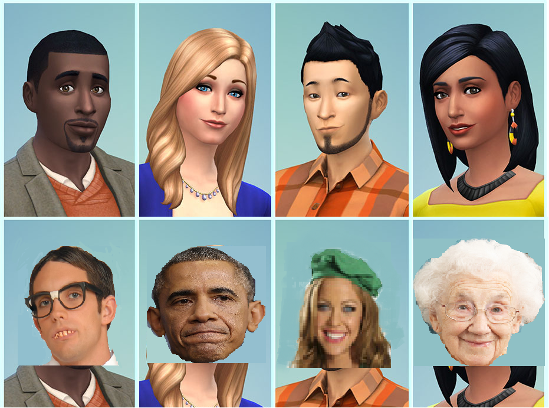
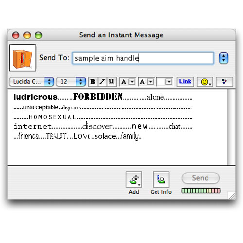
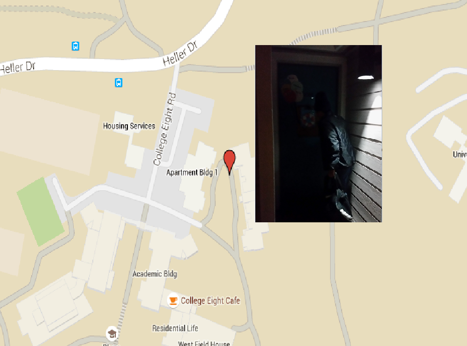

Prompt #1: Reproduction and Representation: Arrays, Grids, Avatars
Posted: April 8th, 2015
 If you imagine a virtual world, a world apart from our own yet
much alike, what would be the possibilities in such world? In
the "real" world, this virtual world does exist in places such
as video games and social media in which the user portrays
himself/herself as someone different than themselves or someone
they want to be. This image based off of the Sims game series
portrays the power of how avatars, the version of ourselves in
the virtual world, can play on the human mind.
In a virtual world, one can portray themselves as someone
totally different from who they really are. The image has four
avatars and underneath are their "true" identities. Looking at
the avatars, you see that they appear as normal people:
possessing humanlike features such as skin color, hair, face,
etc. However, behind every avatar there is a real person, and
its not always the case where the real person actually resembles
their avatar. Because of the way their avatar appears, you are
misguided into believing certain features about the real person
are true. "Putting a face on things also attaches the societal
associations that such a face bears... An obvious example is
that you do not need to be a female to appear in a female
avatar" (Coleman 74). With this power being both bolstering and
decepting, someone can abuse it and possibly maliciously affect
someone else in the process. However, with the right
intentions, one can use it as a way to enjoy and have fun with
their endeavors.
Prompt #2: Text as Representation / Text as Image
Posted: April 23rd, 2015
 In the modern day, it is becoming more acceptable for gay teens
to come out. However, around 20 years ago that was not the case.
Many barriers caused these teens to feel isolated and alone, such
as living in small towns and not being able to communicate with
other gay teens. It wasn't until the internet chatrooms were
created and gay teens were able to find others that shared the
same experiences and were able to find solace. This image
represents the power that the internet and chatrooms have and how
they bring people together.
The image appears as an instant messenger box that contains words
what look like a message being sent to another individual. What
the text says is a bunch of words that all seem to have different
meanings and say different messages. The way they are organized,
however, is the journey of a teen going through an experience of
not being accepted from the top to the bottom. The top has words
that a person feeling alone might feel, and towards the middle
has words that relate to the internet and discovery, which is the
internet and contact with other people that feel similar to the
top or even people that have found solace. One person discovering
what the internet can bring said, "'I still remember the first
time I saw those Internet chat rooms on AOL,' she says. 'I was
like, this is really different! And then suddenly we were able to
get on the Web and find websites dedicated to the culture.'"
(Henn 1). Towards the bottom, the words become more positive and
describe feelings of comfort when people can gather as a
community and share their experiences with others going through
the same thing. The icon in the corner is a closet signifying
that the chat has helped people come out of the closet.
Prompt #3: Interactivity and the Multi-Vocal Work
Posted: May 13th, 2015
Social media has become one of the most popular forms of
communication, and it has become a daily use on the internet. It
is a place where one is able to find other people that they can
connect with. The thing is, race has become a very important
issue when it comes to social media. The article "Roots and
Revelation: Genetic Ancestry Testing and the YouTube Generation,"
by Alondra Nelson and Jeong Won Hwang, mention the parallel
developments of social networking technologies or SNS such as
Twitter, Facebook, and especially YouTube, and the direct-to
consumer genetic ancestry testing. They propose how both of these
digital technologies create an understanding of race.
YouTube, among all of these SNSs have become very unique due to
the fact that it is able to circulate and upload videos. Not only
that, but different types of broadcasts on YouTube have been
described as roots revelations. "Developments in computer science
and molecular biology offer new avenues for the construction and
performance of racial identity. Roots revelations videos suggest
that African American genealogists' identities can be drawn not
only from genetic ancestry results, but also from the networked
interaction that occurs between broadcasters and their audiences"
(p.286). We can clearly see how these two authors argue that
through the intersection and interactions of these technologies,
they determine and define what race means online as well as
offline in the real world. The image that I created represents
YouTube, and the fact that we are able to see ourselves through
this "video" shows the different identities that are seen on this
SNS. YouTube is an example that shows us how we are globally
connected by race instead of being divided by it. The words that
are following the cursor in this image represent the possible
thoughts or reactions that could be going through a person's
mind. It lets us discover our identity and broadcast our racial
self.
Prompt #4: Cartography of the Spectacle
Posted: April 20th, 2015
 When you look at the image, what do you think about it? One thing about
the picture is that it's dark, its in front of some door and the person
in the picture is fully clothed and it is impossible to see any exposed
skin. You also see the person holding a bag of some kind. Based off of
these observations, you can come up with many assumptions. One such
assumption is that the person in the picture is about to rob a home.
However, what thoughts come to mind when you make that assumption. One
of which is race. One might assume the person is a certain race due to
the person's actions and what races most commonly do that action. One
race that someone might assume is that the person is black, despite not
knowing anything about the person that could actually provide a
reasonable explanation of the race. However, one thing wrong about this
is that people shouldn't associate one action with a certain race, but
instead should associate the action with the person's class and that
there may be a reason why the person is doing what they're doing. "The
Watts riot was not a racial conflict: the rioters left alone the whites
that were in their path, attacking only the white policemen, while on
the other hand black solidarity did not extend to black store-owners or
even to black car-drivers. Martin Luther King himself had to admit that
the revolt went beyond the limits of his specialty. Speaking in Paris
last October, he said: 'This was not a race riot. It was a class
riot.'" (Guy 1). This article says that even famous riots and events
were not all about race and were actually about their rights and
cruelty of the law. That is what my image portrays.
Prompt #5: The Augmented Human- Free Play!
Posted: April 30th, 2015
At first glance at this interactive image, assuming you started from the
left, you see a small circle that's green and new and moving a little to
the left and right, you see that it grows the further right you go. As
you keep going, it slowly starts to change color a little bit, also the
color is becoming more explosive and random. You also see a yellow
pillar in the middle with 2 entrances on both sides, seeing that on the
other side it has the word "end". The closer you get to the yellow
pillar, the crazier and bigger the circle gets. Once you go inside the
mysterious pillar, the circle is gone and it is one step closer to
reaching the other side. However, once you go further in, you see the
"start" sign in the beginning start to fade, the once glorified "end"
sign becomes a more blood red, and coming out of the yellow pillar is a
white square. Once you reach the end of the line, more white squares
join you and that is the end. Although these are just simple shapes,
they do represent an important inssue in today's world. Students in the
present day have a false view of the ideal lifestyle, with "flexibility
being more important than knowledge, they are valued for their ability
to discard acquired skills and learn new ones" (Mason 68). In my image
the circle in the beginning represents the youth, growing until they
reach the yellow pillar which is school and anything else that
influences their ideals. The circle is full of potential which the
flashing colors represent, and once it crosses the other side, it
becomes a blank square and joins the rest of the blank square.